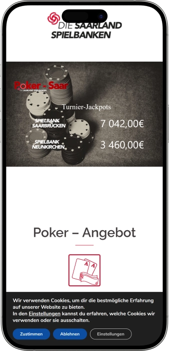
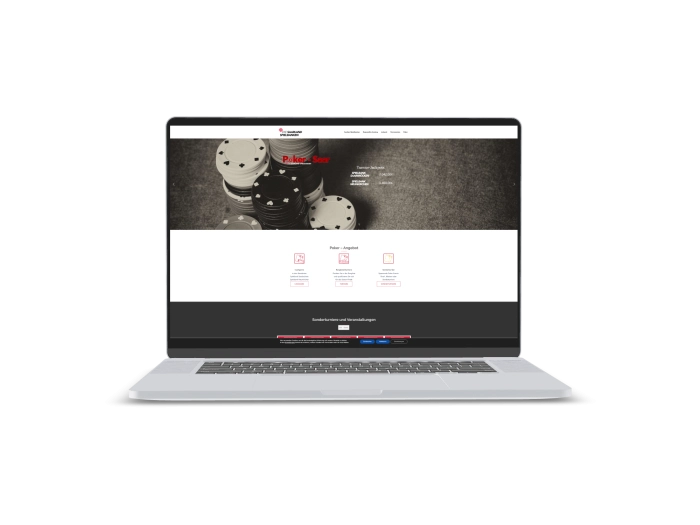

Exklusives Willkommensangebot von
Exklusives Willkommensangebot von
Spielbank Saarbrücken — Casino, Poker, Automaten und Events
Top-Casino
Bonusdetails
Casino
Boni
Rate
Frei Spins
Mehr Infos
Erhalten
Vorteile
- In der Spielbank Saarbrücken verbinden wir klassisches Spiel, moderne Automaten und stilvolle Abendunterhaltung.
-
Jackpots mit starken Gewinnsummen im Spielsaal.
-
Slots ab einem Cent pro Spiel.
-
Poker-Cashgame mit lebendiger Tischdynamik.
-
American Roulette und Black Jack täglich.
-
Kostenloser Eintritt für den ersten Besuch.
-
Bel étage für Konzerte und Abende.
-
Bar-Ambiente für entspannte Spielpausen.
- Unser Casino eignet sich für spontane Besuche, regelmäßige Spielabende, Poker-Runden und besondere Veranstaltungen. Wir setzen auf persönlichen Service, klare Abläufe und ein angenehmes Erlebnis vom Empfang bis zum letzten Spiel.
Spielbank Saarbrücken App



Über das Spielbank Saarbrücken
Die Spielbank Saarbrücken überzeugt mit Live-Spiel, aktuellen Jackpot-Werten und einer starken Poker-Atmosphäre. Wir verbinden klassischen Spielsaal, Automaten, Bel étage Events und kostenlosen Eintritt zu einem vielseitigen Abend.
- Jackpots bis 50.719,70 €.
- Slots ab 0,01 €.
- Poker Buy-in 100 €.
Die Spielbank Saarbrücken ist unser Casino für Gäste, die Live-Spiel, stilvolles Ambiente und aufmerksamen Service schätzen. Wir schaffen einen Ort, an dem klassische Tische, moderne Automaten und ein gepflegter Abend harmonisch zusammenkommen.

In unserem Spielsaal finden Sie sowohl ruhige Spielmomente als auch dynamische Runden am Live-Tisch. Vom Empfang bis zur Orientierung im Haus achten wir auf klare Abläufe und eine angenehme Atmosphäre. Die Spielbank Saarbrücken eignet sich für den ersten Casinobesuch ebenso wie für regelmäßige Abende. Freunde des klassischen Spiels genießen Roulette, Kartenspiele und Poker. Wer Automaten bevorzugt, findet abwechslungsreiche Themen, flexible Einsätze und spannende Jackpot-Momente. Für Pausen bieten wir ein entspanntes Bar- und Gastronomiegefühl. Veranstaltungen, Konzerte und Abende in der Bel étage ergänzen das Spielerlebnis. Die Spielbank Saarbrücken steht für Spielkultur, Unterhaltung und einen Abend mit besonderem Charakter.
Spielbank Saarbrücken: Öffnungszeiten, Zahlungsmethoden und Treueprogramm
Spielbank Saarbrücken: Stil, Öffnungszeiten und Abendprogramm
In der Spielbank Saarbrücken schaffen wir ein Casino-Erlebnis mit klassischem Spiel, modernen Automaten und einem gepflegten Abendambiente. Unser Stil verbindet Live-Tische, komfortable Spielbereiche, persönliche Betreuung und entspannte Pausen in Bar- und Gastronomienähe. Gäste kommen zu uns für American Roulette, Black Jack, Ultimate Poker, Poker-Cashgame und Automatenspiel mit flexiblen Einsätzen. Unser Casino ist täglich von 11:00 bis 03:00 Uhr geöffnet, das klassische Spiel beginnt um 15:00 Uhr und läuft bis 03:00 Uhr. Das Poker-Cashgame startet täglich ab 18:00 Uhr und richtet sich an Gäste, die echte Tischdynamik und konzentrierte Spielrunden mögen. Für Pausen zwischen den Spielen bieten wir eine angenehme Bar-Atmosphäre mit Getränken, Snacks und ruhigen Momenten. Die Bel étage ergänzt unser Haus um Konzerte, Begegnungen, private Abende und besondere Veranstaltungen. Wer einen längeren Aufenthalt plant, kann den Casinobesuch bequem mit nahegelegenen Hotels verbinden. Attraktiv wird unser Angebot durch kostenlosen Eintritt, Automaten ab 0,01 € und aktuelle Jackpot-Momente. Für regelmäßige Gäste sind Pokerformate, Ranglisten, Sonderturniere und Eventabende besonders interessant. Wir verbinden Spiel, Genuss, Service und Unterhaltung zu einem runden Besuchserlebnis.
| Bereich | Tage | Zeit |
|---|---|---|
| Automaten und Jackpot-Spiele | Täglich | 11:00–03:00 Uhr |
| Klassisches Spiel | Täglich | 15:00–03:00 Uhr |
| American Roulette | Täglich | 15:00–03:00 Uhr |
| Black Jack und Ultimate Poker | Täglich | 15:00–03:00 Uhr |
| Poker-Cashgame | Täglich | ab 18:00 Uhr |
| Bar- und Lounge-Bereich | Täglich | während der Casinozeiten |
| Bel étage Veranstaltungen | Nach Programm | Abendveranstaltungen |
Spielbank Saarbrücken: Service, Sprachen, Zahlungen und Gewinne
In der Spielbank Saarbrücken legen wir großen Wert auf aufmerksames Personal, klare Kommunikation und einen angenehmen Service vom Empfang bis zur Auszahlung. Unser Team begrüßt Gäste am Eingang, unterstützt bei der Orientierung im Haus und erklärt auf Wunsch die grundlegenden Abläufe an Automaten, Live-Tischen, Pokerbereich, Bar und Bel étage. Die Hauptsprache im Casino ist Deutsch, gleichzeitig sind wir durch unser internationales Publikum an einfache Servicegespräche in weiteren gängigen Sprachen gewöhnt. Für Poker-Gäste spielen Dealer und Floorman eine besondere Rolle, weil sie Sitzplätze, Spieltempo, Kartenabläufe und Tischordnung koordinieren. Wir möchten, dass neue Gäste entspannt ankommen und erfahrene Spieler schnell genau den Service erhalten, den sie brauchen.
Die zentrale Währung in der Spielbank Saarbrücken ist der Euro, sodass Einsätze, Jetons, Automaten, Kasse und Auszahlungen in einem vertrauten Geldformat abgewickelt werden. Im klassischen Spiel nutzen Gäste Jetons, die je nach Bereich über die Kasse oder direkt im Spielablauf bereitgestellt werden. Im Automatenspiel erfolgt die Nutzung über die jeweilige Maschine, Kassentickets und den Service an der Kasse. Für bargeldlose Vorgänge können Gäste unser Kassenteam ansprechen; die verfügbaren Optionen richten sich nach technischer Verfügbarkeit, Vorgangsart und den geltenden Prüfanforderungen. Dieser klare Ablauf sorgt für Sicherheit, Transparenz und einen strukturierten Umgang mit Spielmitteln.
Für einen komfortablen Besuch empfehlen wir, den gewünschten Spielbetrag in Euro einzuplanen und bei Bedarf vor dem Casinobesuch einen Geldautomaten oder Bankservice zu nutzen. Wer mit einer anderen Währung anreist, kann den Abend besonders entspannt gestalten, indem der Wechsel vorab oder über geeignete Bankwege erfolgt. Ein separates Spielbudget hilft dabei, Einsätze, Pausen, Gastronomie und Heimweg bewusst zu planen. Unser Team unterstützt Gäste bei Fragen zur Kasse, zum Erwerb von Jetons, zur Rückgabe von Jetons und zur Auszahlung von Gewinnen. So bleibt der Besuch übersichtlich, sicher und angenehm.
Gewinnauszahlungen werden in der Spielbank Saarbrücken über die Kasse abgewickelt. Gäste legen Jetons, Automatentickets oder andere gültige Spielnachweise vor, anschließend wird der Betrag geprüft und nach dem vorgesehenen Verfahren ausgezahlt. Kleinere Gewinne lassen sich in der Regel direkt vor Ort erhalten, größere Beträge können eine zusätzliche Identifikation und eine besonders sorgfältige Kassenprüfung erfordern. Für private Spieler gelten Spielgewinne in vielen Fällen als persönlicher Spielerfolg, während professionelle oder regelmäßig erzielte Einnahmen gesondert betrachtet werden können. Bei hohen Gewinnen, Turniererfolgen oder individuellen Fragen ist eine steuerliche Fachberatung sinnvoll. Wir sorgen für einen diskreten, klaren und serviceorientierten Auszahlungsprozess.
Spielbank Saarbrücken: Besuchsregeln, Dresscode und Anreise
In der Spielbank Saarbrücken pflegen wir eine stilvolle, respektvolle und angenehme Atmosphäre für alle Gäste. Der Zutritt ist für volljährige Besucher mit gültigem Ausweisdokument vorgesehen. Für den ersten Besuch empfehlen wir, Personalausweis oder Reisepass griffbereit zu haben, damit der Empfang zügig und entspannt abläuft. Wir begrüßen ein gepflegtes Erscheinungsbild, das zu einem Casinoabend, klassischen Spielen und einer Bar-Atmosphäre passt. Für den Automatenbereich eignet sich gepflegte Freizeitkleidung, während viele Gäste im klassischen Spielsaal einen eleganteren Stil bevorzugen. In allen Spielbereichen gelten die Regeln des jeweiligen Tisches, die Hinweise des Personals und ein ruhiger Umgangston. Wir schaffen einen Rahmen, in dem sich Gäste auf Spiel, Genuss und einen besonderen Abend konzentrieren können. Für Sicherheit und Komfort gelten klare Zutritts-, Aufsichts- und Verantwortungsregeln. Die Anreise zur Spielbank Saarbrücken ist sowohl mit dem Auto als auch mit öffentlichen Verkehrsmitteln komfortabel. Für Autofahrer stehen praktische Parkmöglichkeiten in der Nähe des Hauses zur Verfügung. Bei Veranstaltungen in der Bel étage lässt sich der Abend besonders angenehm planen, wenn Anreise, Einlass und Gastronomiepause aufeinander abgestimmt werden.
Dresscode in der Spielbank Saarbrücken
- • Gepflegte Freizeitkleidung passt zu den meisten Besuchen und sorgt für einen angenehmen ersten Eindruck.
- • Für klassisches Spiel, Poker und Abendveranstaltungen empfehlen wir Smart Casual mit Hemd, Bluse, Sakko oder gepflegten Schuhen.
- • Ein eleganter Stil passt besonders gut zu Konzerten, privaten Abenden, Bel étage und festlichen Besuchen.
- • Entscheidend ist ein sauberes, gepflegtes und respektvolles Auftreten passend zur Casino-Atmosphäre.
Besuchsbedingungen der Spielbank Saarbrücken
- • Der Zutritt ist für Gäste ab 18 Jahren vorgesehen.
- • Ein gültiges Ausweisdokument sollte beim Besuch mitgeführt werden.
- • Der Eintritt in die Spielbank Saarbrücken ist kostenlos und erleichtert den ersten Besuch.
- • Die Spielbereiche folgen eigenen Zeiten: Automaten starten früher, klassisches Spiel beginnt später.
- • Für Poker-Cashgame erfolgt die Platzierung über das Personal oder den zuständigen Floorman.
Verhalten im Spielbereich der Spielbank Saarbrücken
- • In den Spielbereichen folgen Gäste den Hinweisen von Dealern, Kasse und Saalpersonal.
- • Foto- und Videoaufnahmen sind nur so möglich, dass Privatsphäre und Spielbetrieb geschützt bleiben.
- • Einsätze richten sich nach den Limits des jeweiligen Tisches, Automaten oder Pokerformats.
- • Wir fördern ruhige Kommunikation, gegenseitigen Respekt und einen fairen Spielrhythmus.
- • Unser Team unterstützt bei Fragen zu Regeln, Jetons, Automatentickets und Kassenabläufen.
Anreise und Parken an der Spielbank Saarbrücken
- • Mit dem Auto erreichen Gäste unser Haus bequem über Deutschmühlental und die Parkmöglichkeiten in der Nähe.
- • Für Veranstaltungen lohnt sich eine frühzeitige Anreise, damit Einlass und Platznahme entspannt bleiben.
- • Öffentliche Verkehrsmittel und Taxi eignen sich ideal für einen Abend ohne Parkplatzsuche.
- • Nach Spiel oder Veranstaltung lässt sich der Abend angenehm in Bar, Bistro oder nahegelegenen Hotels fortsetzen.
Spielbank Saarbrücken: Vorteile, Treue und besondere Gästemomente
In der Spielbank Saarbrücken entsteht Gästetreue durch wiederkehrende Besuche, persönlichen Service, Poker-Aktivität, Veranstaltungen und komfortable Vorteile vor Ort. Wir machen den Eintritt kostenlos, damit der erste Besuch besonders einfach und einladend bleibt. Der spielerische Einstieg beginnt bei Automaten ab 0,01 €, setzt sich am Live-Tisch fort und wird durch Poker-Cashgame mit einem Buy-in ab 100 € ergänzt. Für Gäste, die Jackpot-Momente lieben, sind Gewinnsummen im Bereich von mehreren zehntausend Euro besonders spannend. Poker-Gäste profitieren von Cashgame, Ranglistenformaten, Sonderturnieren und der Möglichkeit, sich über gute Ergebnisse für Finalformate zu empfehlen. Veranstaltungsbesucher genießen Konzerte, Bel étage, Gastronomiepausen und einen stimmigen Abendablauf. Wir verstehen Treue nicht nur als Karte, sondern als Zusammenspiel aus Spiel, Service, Events, Poker und persönlicher Aufmerksamkeit. Je öfter Gäste die Spielbank Saarbrücken besuchen, desto besser kennen sie Bereiche, Spielzeiten, Tischformate und besondere Programmpunkte. Unser Team hilft bei der Spielauswahl, erklärt Abläufe und unterstützt bei Kasse, Poker und Veranstaltungen. So wird aus dem ersten Besuch Schritt für Schritt ein vertrautes Casinoerlebnis. Wir begleiten Gäste auf jedem Niveau, vom Automatenstart bis zum regelmäßigen Pokerabend.
Registrierung und Teilnahme
- • 18+ und ein gültiges Ausweisdokument bilden die Grundlage für den Besuch der Spielbank Saarbrücken.
- • 0 € Eintritt machen den ersten Besuch, kurze Spielrunden und spontane Abende besonders leicht.
- • Für Poker-Cashgame und Turniere wenden sich Gäste an Empfang, Floorman oder Pokerpersonal.
- • Ein persönliches Spielbudget hilft dabei, Automaten, klassische Spiele und Poker bewusst zu planen.
- • Unser Team informiert über Spielzeiten, Events, Jackpot-Werte und Bel étage Programmpunkte.
Vorteilsstufen der Spielbank Saarbrücken
- • First Visit: kostenloser Eintritt, Orientierung im Haus, Automaten ab 0,01 € und ein entspannter Start.
- • Slot Explorer: flexible Einsätze, abwechslungsreiche Automaten, Jackpot-Spiele und Kassenservice.
- • Live Game Guest: American Roulette, Black Jack und Ultimate Poker mit Live-Dealern und klaren Tischabläufen.
- • Poker Regular: tägliches Cashgame ab 18:00 Uhr, 2/4 mit mindestens 100 € Buy-in und 5/10 nach Nachfrage.
- • Event Guest: Konzerte, Bel étage, Barpausen, Gastronomie und besondere Abende.
- • Premium Regular: vertraute Abläufe, persönliche Empfehlungen und schnelle Orientierung bei Spielen und Events.
Boni und Vorteile
- • 0 € Eintritt: ideal für Erstbesuche, spontane Abende und kurze Spielrunden.
- • Automaten ab 0,01 €: flexible Einsätze für kontrollierte und abwechslungsreiche Spielmomente.
- • Jackpots im fünfstelligen Bereich: starke Gewinnmomente für Gäste, die progressive Automaten bevorzugen.
- • Poker-Cashgame ab 100 € Buy-in: klarer Einstieg in ein regelmäßiges Live-Pokerformat.
- • 5/10 bei Nachfrage: höhere Pokerdynamik für erfahrene Spieler und größere Runden.
- • Ranglistenturniere: Punkte sammeln, Platzierungen erreichen und Finalchancen nutzen.
- • Bel étage: Kultur, Konzerte und besondere Veranstaltungen als Ergänzung zum Spielabend.
- • Kassenservice: Jetons, Tickets, Auszahlungen und diskrete Unterstützung bei größeren Gewinnen.
Softwareanbieter
Unterhaltung und Gaming im Spielbank Saarbrücken
Spielbank Saarbrücken: Boni, Gewinne und besondere Spielangebote
In der Spielbank Saarbrücken machen wir den Casinoabend durch echte Vorteile, Live-Spiel und besondere Erlebnisse attraktiv. Der kostenlose Eintritt ermöglicht einen unkomplizierten Start ohne zusätzliche Eintrittskosten. Automaten ab 0,01 € bieten Gästen flexible Einsätze und einen individuell wählbaren Spielrhythmus. Jackpot-Spiele schaffen besondere Spannung, weil progressive Werte deutlich fünfstellige Bereiche erreichen können. Der klassische Spielsaal verstärkt das Erlebnis mit American Roulette, Black Jack, Ultimate Poker und Pokerformaten. Das tägliche Poker-Cashgame ab 18:00 Uhr ist ideal für Gäste, die den Wettbewerb am echten Tisch suchen. Das 2/4 Format mit mindestens 100 € Buy-in bietet einen klaren Einstieg, während 5/10 bei entsprechender Nachfrage mehr Dynamik ermöglicht. Ranglisten- und Turnierformate schaffen zusätzliche Motivation durch Punkte, Platzierungen und Finalchancen. Die Bel étage erweitert den Abend um Konzerte, Kulturprogramme und besondere Veranstaltungen. Bar- und Gastronomiepausen ergänzen das Spiel mit Entspannung, Gesprächen und Genuss. Wir verbinden Gewinnchancen, Live-Spiel, Events und Service zu einem vollständigen Abend.
Spielvorteile und Gewinnmomente
- • 0 € Eintritt: ein komfortabler Start für Erstbesuche, kurze Spielrunden und Abende mit Freunden.
- • Automaten ab 0,01 €: flexible Einsätze für Gäste, die ihr Spieltempo bewusst wählen möchten.
- • Jackpots im fünfstelligen Bereich: progressive Automaten können Werte wie 21.165,50 € und mehr anzeigen.
- • Starke Jackpot-Werte: einzelne Anzeigen können Größenordnungen wie 50.719,70 € erreichen.
- • Automatenquoten von 92–98% im Durchschnitt: ein attraktiver Orientierungswert für Slot-Gäste.
- • Black Jack mit hoher Spielattraktivität: Kartenspielklassik mit Entscheidungen, Tempo und Live-Dealer.
Pokerangebote der Spielbank Saarbrücken
- • Cashgame täglich ab 18:00 Uhr: regelmäßiges Live-Poker für Gäste, die echte Tischrunden bevorzugen.
- • 2/4 mit Buy-in ab 100 €: klare Struktur für den Einstieg in das Cashgame.
- • 5/10 bei Nachfrage: höheres Limit für erfahrene Spieler und dynamischere Runden.
- • Ranglistenturniere: Punkte sammeln, Positionen verbessern und Finalchancen nutzen.
- • Sonderturniere: besondere Pokerabende mit stärkerem Wettbewerbsgefühl.
Unterhaltung und saisonale Formate
- • Bel étage Konzerte: Live-Musik, Kulturabende und besondere Auftritte in stilvollem Rahmen.
- • Themenabende: spezielle Programme, die dem Spielbesuch Eventcharakter geben.
- • Pokerabende: Spiel, Austausch und Wettbewerb in einem konzentrierten Format.
- • Gastronomiepausen: Bar, Getränke, Snacks und entspannte Unterbrechungen zwischen den Spielen.
- • Abendroute bis 03:00 Uhr: Spiel, Bar, Event und Late-Night-Atmosphäre in einem Besuch.
Spielbank Saarbrücken: Beliebte Spiele im Überblick
In der Spielbank Saarbrücken bieten wir Spiele für unterschiedliche Gästetypen: von Roulette-Fans über Poker-Spieler bis zu Gästen, die moderne Automaten bevorzugen. Unser Casino wird besonders für die Verbindung aus Automaten, American Roulette, Black Jack, Ultimate Poker und Poker-Cashgame geschätzt. Der klassische Spielsaal vermittelt echte Casino-Kultur mit Live-Dealern, Jetons, Tischen und dem besonderen Rhythmus jeder Runde. Automaten eignen sich für Gäste, die schnell starten, Einsätze flexibel wählen und verschiedene Spielthemen entdecken möchten. Roulette bleibt eines der bekanntesten Spiele, weil es einfache Regeln, starke visuelle Spannung und emotionale Momente verbindet. Black Jack spricht Gäste an, die Entscheidungen treffen und ein klares Kartenspiel mit Tempo erleben möchten. Ultimate Poker ist spannend für Besucher, die Kartenkombinationen und strukturierte Spielrunden mögen. Das Poker-Cashgame in der Spielbank Saarbrücken ist ein zentraler Treffpunkt für Gäste, die Live-Wettbewerb am Tisch suchen. Der tägliche Start ab 18:00 Uhr macht Poker zu einem verlässlichen Abendformat. Wer Zahlenverläufe beobachtet, kann sich zusätzlich für Roulette-Permanenzen interessieren. Wir verbinden schnelle Unterhaltung, klassische Spiele und intensive Pokerabende in einem Haus.
Automaten in der Spielbank Saarbrücken
- • Klassische Slots: einfacher Einstieg, klare Mechanik und abwechslungsreiche Spielthemen.
- • Video-Slots: moderne Darstellung, Bonusfunktionen, mehrere Linien und flexible Einsätze.
- • Jackpot-Automaten: progressive Gewinnsummen für zusätzliche Spannung bei jedem Spiel.
- • Spiele ab 0,01 €: komfortabler Einstieg für Gäste, die ihr Budget bewusst steuern möchten.
Klassische Spiele der Spielbank Saarbrücken
- • American Roulette: Roulette-Klassiker mit Live-Dealer, Jetons und Spannung bei jeder Drehung.
- • Black Jack: Kartenspiel mit Entscheidungen, Tempo und einem klaren Zielwert.
- • Ultimate Poker: Kartenkombinationen, strukturierte Runden und ein attraktives Tischspielerlebnis.
- • Permanenzen: Ergebnisverläufe für Gäste, die Roulette-Zahlen aufmerksam verfolgen.
Poker in der Spielbank Saarbrücken
- • Poker-Cashgame 2/4: tägliches Live-Spiel mit mindestens 100 € Buy-in.
- • Poker 5/10: höheres Format bei ausreichender Nachfrage am Tisch.
- • Ranglistenturniere: Wettbewerb über Punkte, Platzierungen und Finalmöglichkeiten.
- • Sonderturniere: besondere Pokerabende für ein intensiveres Spielerlebnis.
Spielbank Saarbrücken: Einsätze nach Spielen und Bereichen
In der Spielbank Saarbrücken können Gäste den passenden Spielrahmen für ihr Budget wählen: Automaten ab 0,01 €, klassische Tische mit tagesaktuellen Tischlimits und Live-Poker mit klarer Buy-in-Struktur. So lässt sich der Abend entspannt beginnen, dynamischer gestalten oder gezielt auf Poker ausrichten. Bei Automaten hängt der Einsatz von Maschine, Linien und gewählter Einstellung ab, während im klassischen Spiel die Limits am jeweiligen Tisch angezeigt werden. Im Poker sind 2/4 mit mindestens 100 € Buy-in und 5/10 bei entsprechender Nachfrage die wichtigsten Orientierungen.
| Spiel oder Bereich | Mindesteinsatz | Maximaler Einsatz |
|---|---|---|
| Automaten | ab 0,01 € | abhängig von Automat und Spieleinstellung |
| Jackpot-Automaten | ab 0,01 € | Jackpots im fünfstelligen Bereich möglich |
| American Roulette | laut Tischlimit | laut Tischlimit |
| Black Jack | laut Tischlimit | laut Tischlimit |
| Ultimate Poker | laut Tischlimit | laut Tischlimit |
| Poker-Cashgame 2/4 | Buy-in ab 100 € | nach Stack und Tischordnung |
| Poker-Cashgame 5/10 | nach Verfügbarkeit | höheres Limit bei Nachfrage |
| Bel étage Veranstal | je nach Veranstaltung | je nach Format |
Spielbank Saarbrücken: Veranstaltungen, Entertainment und Abendprogramm
In der Spielbank Saarbrücken verstehen wir Unterhaltung als mehr als Spieltische und Automaten. Unser Abendformat verbindet Casino, Musik, Begegnungen, Gastronomiepausen und Kultur in der Bel étage. Gerade die Bel étage macht unser Haus für Gäste interessant, die Spiel mit Konzert, Auftritt oder Themenabend kombinieren möchten. Im Programm finden sich Live-Musik, Tribute-Formate, Singer-Songwriter-Abende, Jazz, Pop-Rock und besondere Kulturveranstaltungen. So entsteht ein Besuch, der nicht nur Spiel, sondern ein vollständiges Abendgefühl bietet.
Die regelmäßige Entertainment-Atmosphäre entsteht durch Öffnungszeiten bis 03:00 Uhr, Barpausen, Live-Tische und den besonderen Rhythmus eines späten Casinoabends. Das Nachtgefühl in der Spielbank Saarbrücken lebt von Casino-Lounge, Spielsaal, Gesprächen an der Bar und ausgewählten Events. Gäste können mit Automaten oder klassischem Spiel beginnen, anschließend ins Poker-Cashgame wechseln, eine Pause einlegen und den Abend mit Konzert oder Veranstaltung abrunden. Für einen lebendigen Night-out wird unser Haus damit zu einem starken Ausgangs- und Mittelpunkt des Abends.
Poker-Events nehmen in unserem Unterhaltungsangebot eine besondere Rolle ein. Das Cashgame startet täglich ab 18:00 Uhr und bringt einen verlässlichen Abendrhythmus in den Pokerbereich. Ranglisten- und Sonderturniere sorgen zusätzlich für Wettbewerb, Ziele und Gemeinschaftsgefühl. Gäste schätzen nicht nur einzelne Hände, sondern den gesamten Ablauf aus Platznahme, Entscheidungen, Tischgesprächen, Bluff, Stack und Ergebnis. Auch für Beobachter erzeugt ein Pokerabend eine unverwechselbare Live-Casino-Atmosphäre.
Darüber hinaus eignen sich unsere Räumlichkeiten für private Abende, Begegnungen und Veranstaltungen, bei denen Spiel ein Teil des Gesamterlebnisses wird. Die Bel étage passt zu Konzerten, Firmenformaten, kulturellen Abenden und festlichen Programmen. Bar, Gastronomie, Aussichtsstimmung und Spielbereich ermöglichen einen Abend vom Willkommensgetränk bis zum späten Abschluss. Die Spielbank Saarbrücken ist ein Ort, an dem Unterhaltung Schritt für Schritt entsteht: Ankommen, spielen, Musik erleben, sprechen, genießen und den Abend ausklingen lassen.
Entertainment in der Spielbank Saarbrücken
- • Bel étage: Raum für Konzerte, Kulturabende, private Events und besondere Programme.
- • Konzerte: Live-Musik, Jazz, Tribute, Pop-Rock und intime Auftritte im Abendformat.
- • Poker-Cashgame: tägliches Live-Poker ab 18:00 Uhr für Gäste mit Wettbewerbsfokus.
- • Ranglistenturniere: Poker-Events mit Punkten, Platzierungen und Finalperspektive.
- • Sonderturniere: besondere Pokerabende für ein intensiveres Spielerlebnis.
- • American Roulette: klassisches Live-Spiel mit starker Casino-Atmosphäre.
- • Black Jack: Kartenspiel für Gäste, die schnelle Entscheidungen mögen.
- • Ultimate Poker: Tischspiel für Fans von Kombinationen, Einsätzen und Live-Runden.
- • Jackpot-Automaten: progressive Gewinnmomente mit zusätzlicher Spannung.
- • Barbereich: Getränke, Pausen, Gespräche und Lounge-Gefühl zwischen den Spielen.
- • Gastronomie: Snacks, Gerichte und angenehme Unterbrechungen während des Abends.
- • Late-Night-Format: Spiel und Unterhaltung bis 03:00 Uhr.
Spielbank Saarbrücken: Bar, Gastronomie, Hotels und Erholung
In der Spielbank Saarbrücken beginnt Erholung nicht erst am Spieltisch, sondern auch in den Pausen zwischen den Spielen. Wir schaffen eine Abendroute, in der Automaten, klassischer Spielsaal, Poker, Bar und Gastronomie zu einem stimmigen Erlebnis zusammenfinden. Der Barbereich eignet sich für kurze Pausen, Gespräche, Getränke vor dem Spiel oder einen ruhigen Ausklang. Hier können Gäste nach einer dynamischen Tischrunde durchatmen, eine Pokerhand besprechen oder sich auf die nächste Spielsession einstimmen.
Die gastronomische Seite macht den Besuch besonders rund und angenehm. Das Bistro am See und die Gastronomie in Casinonähe ergänzen den Abend mit Getränken, Snacks, Gerichten und entspannter Atmosphäre. Für Veranstaltungsbesucher ist dieser Ablauf besonders komfortabel: früher ankommen, vor dem Konzert genießen, nach dem Event pausieren oder den Abend nach dem Spiel fortsetzen. Die Umgebung mit Terrasse und Grünflächen unterstützt ein ruhiges, gepflegtes Abendgefühl.
Wer einen Besuch mit Übernachtung plant, kann die Spielbank Saarbrücken sehr gut mit nahegelegenen Hotels, Apartments und Unterkünften kombinieren. Das passt zu Wochenendabenden, geschäftlichen Aufenthalten, festlichen Besuchen oder Kulturprogrammen in der Bel étage. Gäste wählen ihre Unterkunft passend zum persönlichen Reisestil: zentral, ruhig, komfortabel oder nahe an Abendunterhaltung. Nach dem Check-in lässt sich der Casinobesuch entspannt planen und der Abend ohne Eile genießen.
Erholung in der Spielbank Saarbrücken bedeutet Balance aus Spiel, Pause, Gespräch, Gastronomie, Veranstaltung und spätem Abendrhythmus. Wir laden Gäste ein, nicht zu hetzen, sondern den eigenen Besuch bewusst zu gestalten. Manche starten an der Bar und wechseln anschließend zu Roulette oder Black Jack; andere beginnen an Automaten und gehen später ins Poker-Cashgame; wieder andere bauen ihren Abend um ein Konzert in der Bel étage. In jedem Szenario bleibt unser Casino der Mittelpunkt eines atmosphärischen Abends.
Erholungsorte in der Spielbank Saarbrücken
- • Bar der Spielbank Saarbrücken: Getränke, Gespräche, kurze Pausen und Lounge-Stimmung zwischen den Spielen.
- • Bistro am See: Gastronomie für Abendessen, Snacks und ruhige Pausen vor oder nach dem Spiel.
- • Bel étage: Raum für Konzerte, Veranstaltungen und besondere Begegnungen.
- • Terrassenatmosphäre: angenehme Pausen mit Blick und ruhigem Abendgefühl.
- • Automatensaal: schneller Einstieg, flexible Einsätze und unterhaltsamer Spielrhythmus.
- • Klassischer Spielsaal: American Roulette, Black Jack und Ultimate Poker in Live-Casino-Atmosphäre.
- • Pokerbereich: tägliches Cashgame, Wettbewerb und Austausch am Tisch.
- • Nahegelegene Hotels: komfortable Ergänzung für Gäste, die den Abend verlängern möchten.
FAQ
Ja, unser Casino eignet sich sehr gut für den ersten Besuch. Das Team hilft bei Orientierung, Kasse, Spielbereichen und grundlegenden Abläufen.
Für einen normalen Besuch der Spielbereiche ist meist keine Reservierung nötig. Für Veranstaltungen, Konzerte und Gruppenabende empfiehlt sich eine frühzeitige Planung.
Ja, unser Personal und die Dealer erklären grundlegende Abläufe, Tischlimits, Jetons und Spielreihenfolge. Wir achten auf einen ruhigen und verständlichen Einstieg.
Aktuelle Werte werden an Jackpot-Automaten und in den jeweiligen Spielbereichen angezeigt. Unser Team unterstützt Gäste gern bei der Orientierung.
Ja, die Bel étage eignet sich für Konzerte, Firmenabende, Feiern und Kulturformate. Die Details richten sich nach Termin, Gruppengröße und gewünschtem Ablauf.